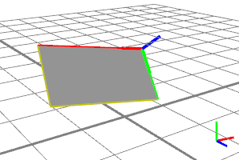
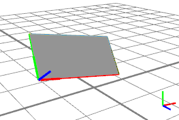
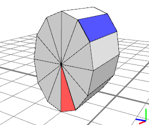
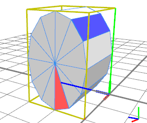
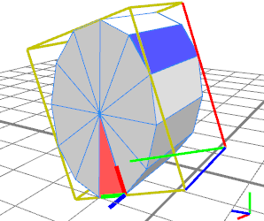
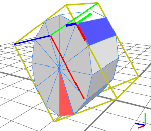
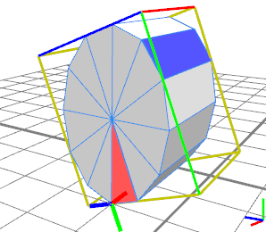

alignScopeToGeometry operation
upAxis selector
| yUp | Uses the face normal as the y-axis. |
| zUp | Uses the face normal as the z-axis. |
faceIndex float 0-based index of face which contains the edge. Negative indices are modulo-adjusted, i.e. -1 is the last face.
edgeIndex float 0-based index of edge which will become the new x-axis. Negative indices are modulo-adjusted, i.e. -1 is the last edge. Note that the edge index is relative to the selected face!
faceSelector selector
| world.lowest | Takes the face with lowest y world-coordinates. |
| largest | Takes the largest face. |
| any | (only in combination with an edgeSelector) Takes the face for which the edge selector has extremal value. |
edgeSelector selector
| world.lowest | Takes the edge with lowest y world-coordinates. |
| longest | Takes the longest edge. |
The alignScopeToGeometry operation manipulates the scope, the pivot and the geometry attributes in the following way:
- select new pivot axis directions (defined by upAxis selector and the selected face and edge, see below)
- calculate the oriented bounding box (OOB) for the geometry along these axes and set pivot.p to the origin of the OOB. The new scope dimensions are set to the OOB.
- transform the geometry into this new coordinate system.
The parameters let you choose an edge of a face in the geometry. The new x-axis of the scope will be parallel to this edge, and the up-axis will be the face's normal.
The geometry is projected to the new scope (i.e. stays at the same place in world coordinates).
Related
Examples
Aligning to the lowest edge

A --> comp(f) { 25: Faces }
The initial scene: After a face component split, the scope (and pivot, fat) happen to be positioned such that the y-axis points towards the ground.

A --> comp(f) { 25: Faces }
alignScopeToGeometry(zUp, any, world.lowest)
Applying alignScopeToGeometry with the any and world.lowest selectors guarantees that the y-axis of the scope points upwards.
This is very useful e.g. for placing bricks on a roof.
Basic usage

A -->
s(2,3,2)
i("cylinder.obj")
B
comp(f) { 0: color(1,0,0) t(0, 0, 0.01) X
| 32: color(0,0,1) t(0, 0, 0.01) X }
The initial scene: A mesh is inserted and two faces highlighted by applying a component split.

The same scene, with scope and pivot of shape B highlighted.

B --> alignScopeToGeometry(zUp, 0, 1)
After alignScopeToGeometry, the pivot's (and the scope's) x-axis points along edge 1 of face 0 (red); the z-axis points along the face normal and the x-axis is normal to the two others. The pivot is positioned at the edges starting point and the scope is the pivot-aligned bounding box of the geometry.

B --> alignScopeToGeometry(yUp, 32, 2)
Here, the second edge of face 32 (blue) is used, and the face-normal becomes the new y-axis.

B --> alignScopeToGeometry(yUp, any, world.lowest)
In this case, "any" and "world.lowest" select the edge with lowest y-position (in world coordinates), which becomes the new x-axis, and the corresponding face-normal becomes the new y-axis (because of the yUp selector).